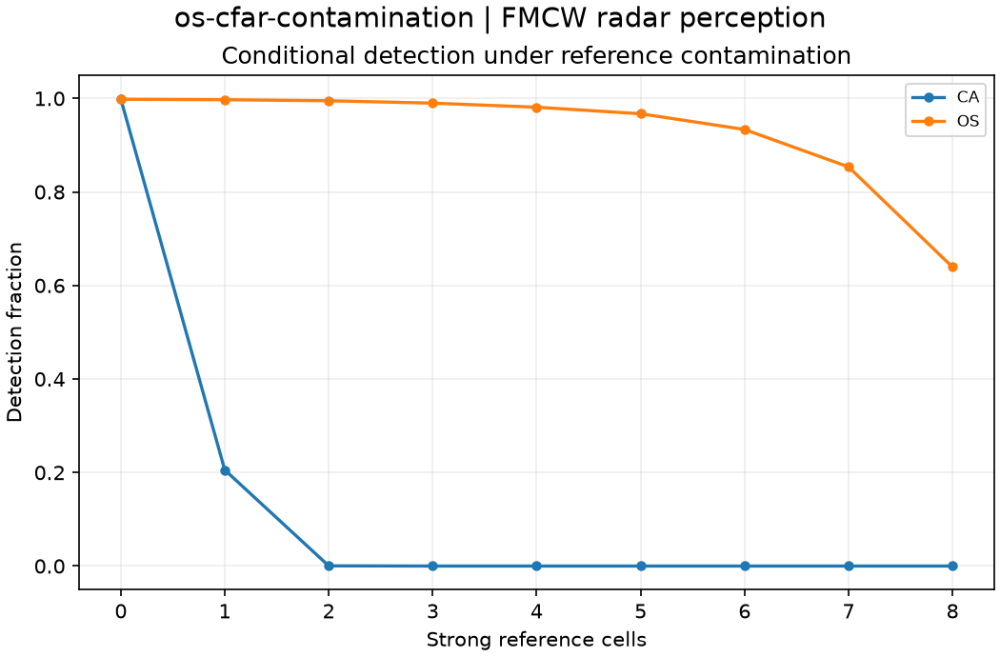

Reproducible FMCW radar perception. Units and field components are printed on the scientific axes. peak d-q quantities use exp(+i omega t); terminal currents point into the protected line.
Sealed numeric archive | Summary CSV | Physical parameters | Run request | Source and environment

| final_ca_pd | 0.0 |
|---|---|
| final_os_pd | 0.6394 |
These are simulations, not hardware measurements. Network-model, measurement, timing and statistical uncertainty require distinct convergence checks. Singular or unilluminated data use explicit masks.
Source revision: df371aecc0a1f6b651ef08fc93e7ab3fd8cf11da.
Dirty checkout: False.
Configuration SHA-256: 1ea353a4816014c71e9c505b3ebe5a9b89c7239475add353aa5ce2b26b0d150f.
Replay preserves original source and parameter provenance. SHA-256 manifests detect changed bytes; they are unsigned integrity records, not certificates of physical validity.